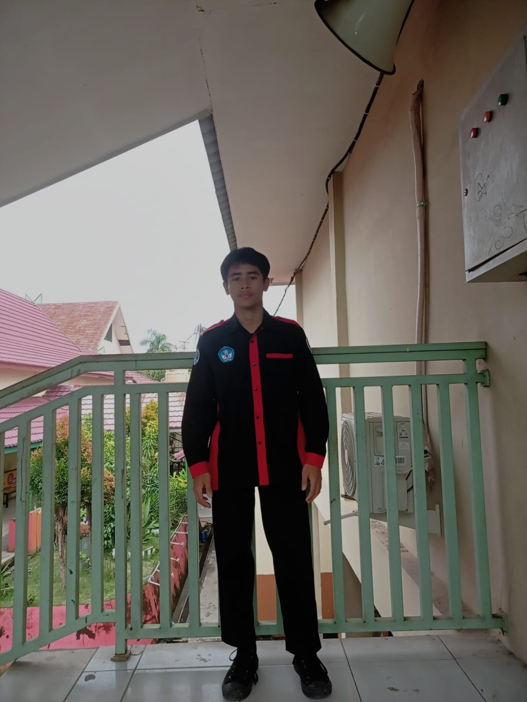

Pengembangan web responsif
Antarmuka bersih yang nyaman dibuka di desktop, tablet, dan ponsel.
Junior Software Developer
Siswa PPLG SMK Negeri 2 Kota Jambi yang membangun website responsif dan rapi, serta siap belajar dan berkontribusi di tim pengembangan web.

Saya siswa jurusan Pengembangan Perangkat Lunak dan Gim (PPLG) di SMK Negeri 2 Kota Jambi. Saya fokus pada pengembangan web: membuat tampilan yang responsif di semua perangkat dan mengelola data secara terstruktur.
Saya disiplin, teliti pada detail, dan terbiasa bekerja dalam tim. Saya mencari kesempatan magang atau posisi junior untuk mengasah kemampuan di proyek nyata.
Tingkat penguasaan saya pada teknologi yang paling sering saya gunakan untuk membangun website.
Membangun website responsif dengan HTML, CSS, JavaScript, dan Bootstrap, dari perencanaan tata letak sampai pengujian di berbagai perangkat.
Membantu menyelesaikan masalah perangkat lunak dan konfigurasi jaringan dasar di lingkungan sekolah.
Pengembangan Perangkat Lunak dan Gim (PPLG). Mempelajari pemrograman web, basis data, dan dasar pengembangan aplikasi.
Tiga bidang yang paling saya kuasai. Klik detail untuk penjelasan lengkap.

Antarmuka bersih yang nyaman dibuka di desktop, tablet, dan ponsel.
Disiplin, rapi, dan komunikatif saat bekerja sama dalam tim.

Memahami dasar jaringan dan menyelesaikan masalah perangkat lunak.
Punya lowongan magang atau pekerjaan? Kirim pesan dan saya akan membalasnya.